소방설비산업기사(기계) (2013-06-02 기출문제)
1과목: 소방원론
1. 폴리염화비닐이 연소할 때 생성되는 연소가스에 해당하지 않는 것은?
- HCl
- CO2
- CO
- SO2
(정답률: 72%)

2. 물의 증발잠열은 약 몇 cal/g인가?
- 79
- 539
- 750
- 810
(정답률: 87%)
3. 이산화탄소의 성질에 관한 설명으로 틀린 것은?
- 임계온도는 약 31.35℃이다.
- 증기비중은 약 0.8로 공기보다 가볍다.
- 전기적으로 비전도성이다.
- 무색, 무취이다.
(정답률: 65%)
4. 경유 화재시 주수(물)에 의한 소화가 부적당한 이유는?
- 물보다 비중이 가벼워 물위에 떠서 화재 확대의 우려가 있으므로
- 물과 반응하여 유독가스를 발생하므로
- 경유의 연소열로 산소가 방출되어 연소를 돕기 때문에
- 경유가 연소할 때 수소가스가 발생하여 연소를 돕기 때문에
(정답률: 75%)
5. A급화재의 가연물질과 관계가 없는 것은?
- 섬유
- 목재
- 종이
- 유류
(정답률: 89%)
6. 연소의 3요소와 4요소의 차이를 제공하는 요소는?
- 가연물
- 산소공급원
- 점화원
- 연쇄반응
(정답률: 88%)
7. 제1종 분말소화약제의 주성분은?
- 탄산수소나트륨
- 탄산수소칼륨
- 요소
- 황산알루미늄
(정답률: 82%)
8. 화재시 온도상승이 100℃에서 500℃로 온도가 상승 하였을 경우 500℃의 열복사 에너지는 100℃의 열복사 에너지의 약 몇 배가 되겠는가?
- 18.45
- 22.12
- 26.03
- 30.27
(정답률: 41%)
9. CO2 소화약제 사용시 CO2 방출 후 방호 공간의 산소 부피농도를 구하는 식으로 옳은 식은?
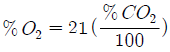
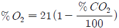
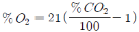
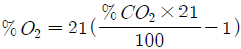
(정답률: 70%)
10. 프로판 가스의 증기 비중은 약 얼마인가? (단, 공기의 분자량은 29이고, 탄소의 원자량은 12, 수소의 원자량은 1이다.)
- 1.37
- 1.52
- 2.21
- 2.51
(정답률: 55%)
11. 건축물의 주요구조부가 아닌 것은?
- 내력벽
- 지붕틀
- 보
- 옥외계단
(정답률: 78%)
12. 유류화재시 분말소화약제와 병용이 가능하여 빠른 소화효과와 재 착화방지 효과를 기대할 수 있는 소화약제로 다음 중 가장 옳은 것은?
- 단백포소화약제
- 알코올형포소화약제
- 합성계면활성제포소화약제
- 수성막포소화약제
(정답률: 75%)
13. 다음 중 일반적인 소화방법의 분류로 가장 거리가 먼 것은?
- 질식소화
- 제거소화
- 냉각소화
- 방염소화
(정답률: 84%)
14. 자연발화를 일으키는 원인이 아닌 것은?
- 산화열
- 분해열
- 흡착열
- 기화열 자연발화의 형태
(정답률: 61%)
15. 부피비로 메탄80%, 에탄15%, 프로판4%, 부탄1%인 혼합기체가 있다. 이 기체의 공기 중에서의 폭발하한계는 약 몇 vol%인가? (단, 공기 중 단일 가스의 폭발하한계는 메탄 5vol%, 에탄2vol%, 프로판2vol%, 부탄 1.8vol%이다.)
- 2.2
- 3.8
- 4.9
- 6.2
(정답률: 70%)
16. 불꽃의 색깔에 의한 온도를 측정하였을 때 낮은 온도에서부터 높은 온도의 순서로 나열한 것은?
- 암적색, 백적색, 황적색, 휘백색
- 휘백색, 암적색, 백적색, 황적색
- 암적색, 황적색, 백적색, 휘백색
- 암적색, 휘백색, 황적색, 백적색
(정답률: 80%)
17. 밀폐된 화재발생 공간에서 산소가 일시적으로 부족하다가 갑작스럽게 공급되면서 폭발적인 연소가 발생하는 현상은?
- 백드래프트
- 프로스오버
- 보일오버
- 스롭오버
(정답률: 82%)
18. 다음 중 Halon 1301의 가장 주된 소화효과는?
- 부촉매효과
- 희석효과
- 냉각효과
- 제거효과
(정답률: 82%)
19. 다음 중 발화의 위험이 가장 낮은 것은?
- 트리에틸알루미늄
- 팽창질석
- 수소화리튬
- 황린
(정답률: 80%)
20. 순수한 액체 탄화수소를 완전 연소시키면 어떤 물질이 발생하는가?
- 산소, 물
- 물, 일산화탄소
- 일산화탄소, 이산화탄소
- 이산화탄소, 물
(정답률: 67%)
2과목: 소방유체역학
21. 물이 흐르고 있는 관내에 피토정압관을 넣어 정체압 Ps와 정압 Po를 측정하였더니, 수은이 들어있는 피토정압관에 연결한 U자관에서 75mm의 액면차가 생겼다. 피토정압관 위치에서의 유속은 몇 m/s인가? (단, 수은의 비중은 13.6이다.)
- 4.3
- 4.45
- 4.6
- 4.75
(정답률: 43%)
22. 단열 노즐의 출구에서 압력 0.1MPa의 건도 0.95인 습증기(포화액 엔탈피 : 418kJ/kg) 포화증기 엔탈피는 몇kJ인가?
- 397.1
- 2,570.7
- 2,591.6
- 2,988.7
(정답률: 29%)
23. 가로×세로가 80cm×50cm인 300℃로 가열된 평판에 수직한 방향으로 25℃의 공기를 불어주고 있다. 대류열전달계수가 25W/m2K일 때 공기를 불어넣는 면에서의 열전달률은 약 몇 kW인가?
- 2.0
- 2.75
- 5.1
- 7.3
(정답률: 58%)
24. 회전수가 1500rpm일 때 송풍기 전압 3.92kPa, 풍량 6m3/min를 내는 팬이 있다. 이때 축동력이 0.6kW라면 전압효율은 대략 몇 %인가?
- 55%
- 60%
- 65%
- 70%
(정답률: 56%)
25. 옥내소화전 노즐선단에서 물제트의 방사량이 0.1m3/min 노즐선단 내경이 25mm일 때 방사압력(기계압력)은 약 kPa인가?
- 3.27
- 4.41
- 5.32
- 5.78
(정답률: 34%)
26. 표준대기압에서 측정한 용기 내의 압력이 각각 다음과 같다. 압력이 가장 낮은 용기는?
- 진공게이지 눈금이 500mmHg이다.
- 진공게이지 눈금이 1.0kgf/cm2이다.
- 진공도가 90%이다.
- 진공도가 0이다.
(정답률: 43%)
27. 돌연 확대관에서의 손실수두는?
- 압력수두에 반비례한다.
- 위치수두에 비례한다.
- 유량에 반비례한다.
- 속도수두에 비례한다.
(정답률: 55%)
28. 소화용수 공급용 배관에서의 압력손실에 대한 설명 중 옳은 것은?
- 완전 난류의 경우 관 마찰 손실수두는 속도에 비례하여 증가한다.
- 동일 유량인 경우는 직경이 큰 관의 압력손실이 더 크다.
- 관 부속품에 의한 손실수두는 압력수두에 비례하여 증가한다.
- 수평배관에서의 압력손실 발생은 관의 마찰에 의한 값이 가장 크다.
(정답률: 29%)
29. 물리량을 질량(M), 길이(L), 시간(T)의 기본 차원으로 나타낼 때, 에너지의 차원은?
- ML2T-2
- ML-1T-2
- ML-1T-1
- ML-2T2
(정답률: 41%)
30. 체적이 0.5m3인 탱크에 산소가 10kg이 들어 있다. 탱크 내부의 온도가 23℃라면 압력은 약 몇 MPa인가? (단, 일반기체상수는 8,314J/kmol·K이다.)
- 1.452
- 1.539
- 1.653
- 1.725
(정답률: 60%)
31. 보일의 법칙은 이상기체의 어떤 상태량이 일정한 조건에서의 상태변화를 나타낸 것인가?
- 온도
- 압력
- 비체적
- 밀도
(정답률: 62%)
32. 안지름 1000mm의 원통형 수조에 들어있는 물을 안지름 150mm인 관을 통해 평균유속 3m/s로 배출한다. 이때 수조내의 수면의 강하속도는 몇 cm/s인가?
- 3.24
- 1.423
- 6.75
- 14.13
(정답률: 42%)
33. 비점성 유체를 가장 잘 설명한 것은?
- 실제 유체를 뜻한다.
- 전단응력이 존재하는 유체흐름을 뜻한다.
- 유체 유동시 마찰저항이 존재하는 유체이다.
- 유체 유동시 마찰저항이 유발되지 않는 이상적인 유체를 말한다.
(정답률: 74%)
34. 기준면에서 5m위에 있는 내경 50mm의 소화전 배관으로 분당 0.39m3의 소화용수가 흐른다. 이 배관 속 소화수의 압력이 150kPa이라면 소화수의 전 수두는 약 몇 m인가?
- 5
- 15
- 21
- 31
(정답률: 41%)
35. 펌프의 흡입 이론에서 볼 때 대기압이 100kPa인 곳에서 펌프의 흡입 배관으로 물을 흡수 할 수 있는 이론 최대 높이는 약 몇 m인가?
- 5
- 10
- 14
- 98
(정답률: 49%)
36. 어떤 유체 2m3의 무게가 18,000N일 때, 이 유체의 비중은 약 얼마인가?
- 0.82
- 0.92
- 1.01
- 9.0
(정답률: 47%)
37. 지름 4cm인 관에 동점성계수 5×10-2cm2/s인 유체가 평균 속도 2m/s로 흐르고 있을 때 레이놀즈수는 얼마인가?
- 14000
- 16000
- 18000
- 20000
(정답률: 69%)
38. 다음 그림과 같은 U자관 차압마노미터가 있다. 압력차 PA-PB를 바르게 표시한 것은? (단, γ1, γ2, γ3는 비중량, h1, h2, h3는 높이 차이를 나타낸다.)
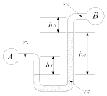
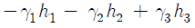
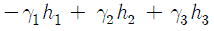
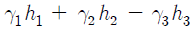
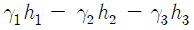
(정답률: 61%)
39. 그림과 같은 탱크에 비중이 0.9인 기름과 물이 들어있다. 벽면 AB에 작용하는 유체(기름 및 물)에 의한 힘은 약 몇 kN인가? (단, 벽면 AB의 폭(y 방향)은 2m이다.)
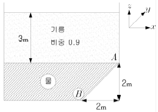
- 185
- 2⑤
- 315
- 415
(정답률: 38%)
40. 그림과 같이 수평으로 놓여 있는 엘보에 물이 0.⑤m3/s의 유량으로 흐른다. 관의 지름은 10cm, 엘보 입구와 출구의 계기압력은 각각 200kPa, 150kPa일 때 x방향으로 작용하는 힘(Rx)은 약 몇 N인가?
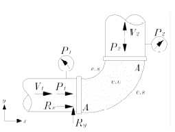
- -1,209
- -1,538
- -1,889
- -2,108
(정답률: 34%)
3과목: 소방관계법규
41. 위험물 각 유별 저장·취급의 공통기준에 대한 내용으로 옳지 않은 것은?
- 제1류 위험물중 자연발화성 물품에 있어서는 불티. 불꽃 또는 고온체와의 접근·과열 또는 공기와의 접촉을 피하고, 금수성 물품에 있어서는 물과의 접촉을 피하여야 한다.
- 제4류 위험물은 불티·불꽃·고온체와의 접근 또는 과열을 피하고 함부로 증기를 발생시키지 아니하여야한다.
- 제5류 위험물은 불티·불꽃·고온체와의 접근이나 과열·충격 또는 마찰을 피하여야 한다.
- 제6류 위험물은 가연물과의 접촉·혼합이나 분해를 촉진하는 물품과의 접근 또는 과열을 피하여야한다.
(정답률: 46%)
42. 대통령령으로 정하는 방염대상물품에 해당되지 않는 것은?
- 암막
- 블라인드
- 침구류
- 카펫
(정답률: 60%)
43. 다음 특정소방대상물 중 노유자(老幼者)시설에 속하지 않는 것은?
- 아동복지시설
- 장애인거주시설
- 노인의료복지시설
- 정신의료기관
(정답률: 66%)
44. 중앙 소방기술 심의위원회의 위원이 될 수 있는 사람은?
- 소방관련 연구소에서 3년 동안 연구에 종사한 사람
- 소방관련 법인에서 3년 동안 업무에 종사한 사람
- 소방시설관리사
- 소방관련 학사학위를 소지한 사람
(정답률: 54%)
45. 화재가 발생되었을 때 화재조사의 실시 시기로서 옳은 것은?
- 소화활동 전에 실시한다.
- 소화활동과 동시에 실시한다.
- 소화활동 후에 실시한다.
- 소화활동과 무관하게 실시한다.
(정답률: 64%)
46. 소방공사 감리원의 배치기준으로 옳지 않은 것은?
- 연면적이 20만 m2 이상인 특정소방대상물은 소방기술사 1인 이상 배치
- 지하층을 포함한 층수가 40층 이상인 특정소방대상물은 소방기술사 1인 이상 배치
- 연면적이 3만 m2 이상 20만 m2 미만인 특정소방대상물(아파트제외)은 특급 감리원 이상의 소방감리원 1인 이상 배치
- 연면적이 5천 m2 이상 3만 m2 미만이거나 지하층을 포함한 층수가 16층 미만인 특정소방대상물의 공사현장은 초급감리원 이상의 소방감리원 1인 이상 배치
(정답률: 35%)
47. 소방시설업에 속하지 않는 것은?
- 소방시설설계업
- 소방시설공사업
- 소방공사감리업
- 소방시설관리업
(정답률: 59%)
48. 방염업자의 지위를 승계한 자는 누구에게 신고하여야 하는가?
- 시·도지사
- 안전행정부장관
- 소방청장
- 대통령
(정답률: 67%)
49. 소방안전관리자를 선임하지 아니한 소방안전관리대상물의 관계인에 대한 벌칙은?
- 100만원 이하의 벌금
- 300만원 이하의 벌금
- 1000만원 이하의 벌금
- 3000만원 이하의 벌금
(정답률: 66%)
50. 소방안전교육사 시험은 누가 실시하는가? (법 개정으로 지문 수정, 2017.7.26.)
- 소방청장
- 안전행정부장관
- 시·도지사
- 소방본부장
(정답률: 45%)
51. 소방시설업에 대한 행정처분 기준에서 1차 처분사항으로 등록취소에 해당하는 것은?
- 소방시설업 등록사항 중 중요사항 변경 신고를 하지 아니하거나 거짓으로 한때
- 거짓 그 밖의 부정한 방법으로 등록한 때
- 설계·시공을 수행하게 한 특정소방대상물 관계인에게 통지의무를 불이행한 때
- 화재안전기준 등에 적합하게 설계·시공 또는 감리를 하지 아니한 때
(정답률: 62%)
52. 소방본부장 또는 소방서장의 건축허가동의를 받아야 하는 범위에 속하지 않은 것은?
- 연면적이 400 m2 이상인 건축물
- 지하층 또는 무창층이 있는 건축물로서 바닥면적이 100 m2 이상인 층이 있는 것
- 특정소방대상물 중 위험물저장 및 처리시설 및 지하구
- 항공기격납고, 관망탑, 항공관제탑, 방송용 송수신탑
(정답률: 47%)
53. 소방안전관리자를 두어야 할 특정소방대상물로서 1급 소방안전관리대상물의 기준으로 옳은 것은?
- 가스제조설비를 갖추고 도시가스사업허가를 받아야 하는 시설
- 가연성가스를 1천톤 이상 저장·취급하는 시설
- 지하구
- 문화재보호법에 따라 국보 또는 보물로 지정된 목조건축물
(정답률: 52%)
54. 다음 중 한국소방안전협회의 업무가 아닌 것은?
- 소방기술과 안전관리에 관한 교육 및 조사·연구
- 위험물탱크 성능시험
- 소방기술과 안전관리에 관한 각종 간행물의 발간
- 화재예방과 안전관리 의식의 고취를 위한 대국민홍보
(정답률: 75%)
55. 다음중 소화활동설비가 아닌 것은?
- 제연설비
- 연결송수관설비
- 비상방송설비
- 연소방지설비
(정답률: 58%)
56. 소방시설관리업을 하고자 하는 사람의 행정절차로서 옳은 것은?
- 시·도지사에게 등록하여야 한다.
- 안전행정부장관의 인가를 받아야 한다.
- 소방청장에게 등록하여야 한다.
- 소방본부장 또는 소방서장에게 허가를 받아야 한다.
(정답률: 54%)
57. 특정소방대상물 중 침대가 있는 숙박시설의 수용인원을 산정하는 방법으로 옳은 것은?
- 해당 특정소방대상물의 종사자 수에 침대의 수(2인용 침대는 2인으로 산정한다)를 합한 수
- 해당 특정소방대상물의 종사자의 수에 객실 수를 합한 수
- 해당 특정소방대상물의 종사자의 수의 3배
- 해당 특정소방대상물의 종사자의 수에 숙박시설 바닥
(정답률: 68%)
58. 위험물제조소 등에서 자동화재탐지설비를 설치하여야 할 제조소 및 일반취급소는 옥내에서 지정수량 몇 배 이상의 위험물을 저장·취급하는 곳인가?
- 지정수량 5배 이상
- 지정수량 10배 이상
- 지정수량 50배 이상
- 지정수량 100배 이상
(정답률: 38%)
59. 다음 중 자체소방대를 두어야 하는 해당 사업소는?
- 위험물제조소
- 지정수량 3000배 이상의 위험물을 취급하는 제조소
- 지정수량 3000배 이상의 위험물을 보일러로 소비하는 일반취급소
- 지정수량 3000배 이상의 제4류 위험물을 취급하는 일반취급소
(정답률: 63%)
60. 소방안전관리자에 대한 실무교육의 과목 및 시간 등 그밖에 실무교육의 실시에 관한 사항은 누가 정하는가?
- 소방안전협회장
- 소방본부장
- 국민안전처장관
- 시·도지사
(정답률: 39%)
4과목: 소방기계시설의 구조 및 원리
61. 폐쇄형스프링클러 설비의 방호구역·유수검지장치 적용시 기준이 되는 항목으로 적합하지 않은 것은?(오류 신고가 접수된 문제입니다. 반드시 정답과 해설을 확인하시기 바랍니다.)
- 하나의 방호구역의 바닥면적은 3000 m2를 초과하지 아니 할 것
- 하나의 방호구역에는 1개 이상의 유수검지장치 또는 일제개방밸브를 설치할 것
- 하나의 방호구역은 2개 층에 미치지 아니 하도록 할 것
- 하나의 방수구역을 담당하는 헤드의 개수는 50개 이하로 할 것
(정답률: 57%)
62. 스프링클러설비의 교차배관의 길이가 18m이다. 배관에 설치되는 행가의 최소 설치수량으로 옳은 것은?
- 1개
- 2개
- 3개
- 4개
(정답률: 60%)
63. 다음은 제연구역의 크기에 관한 것이다. 하나의 제연구역의 면적은?
- 1,000 m2
- 2,000 m2
- 3,000 m2
- 4,000 m2
(정답률: 66%)
64. 고정식 할로겐화합물 공급 장치에 배관 및 분사헤드를 고정 설치하여 밀폐 방호구역 내에 할로겐화합물을 방출하는 설비 방식은?
- 전역방출방식
- 국소방출방식
- 이동식방출방식
- 반이동식방출방식
(정답률: 56%)
65. 물분무소화설비를 설치하는 차고에 기준에 따라 배수설비를 설치할 때 차량이 주차하는 바닥의 기울기는 배수구를 향하여 얼마를 유지해야 하는가?
- 1/100 이상
- 2/100 이상
- 1/200 이상
- 1/250 이상
(정답률: 62%)
66. 옥내소화전설비의 가압송수펌프 주변설비에 대한 내용이다. 옳지 않은 것은?
- 펌프의 토출 측에는 압력계를 설치한다.
- 정격부하운전시 펌프의 성능을 시험하기 위한 배관을 설치한다.
- 체절운전시 압력의 상승을 위한 순환배관을 설치한다.
- 기동용 수압개폐장치를 사용할 경우 그 용적은 100리터 이상으로 한다.
(정답률: 47%)
67. 분말 소화설비의 분말 탱크를 평상시 보수 점검했을 때 정상적인 상태로 되어있지 않은 것은?
- 클리닝밸브는 개방되어 있다.
- 배기밸브는 닫혀 있었다.
- 주개방밸브는 닫혀 있었다.
- 정압작동 밸브는 정상이었다.
(정답률: 44%)
68. 이산화탄소 소화약제의 전역방출방식에 있어서 심부화재 방호대상물의 고무류, 면화류창고, 모피창고, 석탄창고, 집진설비 등에 대한 CO2가스의 설계농도와 체적(1m3)당 소화약제의 양은?
- 설계농도 50%, 소화약제의 양 1.6㎏
- 설계농도 50%, 소화약제의 양 2.0㎏
- 설계농도 75%, 소화약제의 양 2.0㎏
- 설계농도 75%, 소화약제의 양 2.7㎏
(정답률: 42%)
69. 완강기의 조속기가 견고한 커버로 피복된 이유로서 가장 적합한 것은?
- 화재시의 화열에 직접 쪼이는 것을 방지하기 위하여
- 화재시 주수에 의해 직접 물이 들어가는 것을 방지하기 위해
- 기능에 이상을 생기게 하는 모래 따위의 잡물이 들어가는 것을 방지하기 위하여
- 운반을 쉽게 하기 위하여
(정답률: 70%)
70. 거실 바닥면적이 500 m2인 예상제연구역의 직경이 35m이다. 1시간당 최저배출량은 얼마 이상인가?
- 2만5천 m3 이상
- 3만 m3 이상
- 3만5천 m3 이상
- 4만 m3 이상
(정답률: 27%)
71. 물분무소화설비의 소화작용이 아닌 것은?
- 연소작용
- 유화작용
- 냉각작용
- 질식작용
(정답률: 52%)
72. 각 층마다 옥내소화전이 각각 3개소 설치되어 있고 옥상수조가 없는 지상 5층 건물에 저장하여야 할 수원의 유효수량은 얼마인가?(2021년 04월 01일 개정된 규정 적용됨)
- 2.6 m3
- 5.2 m3
- 7.8 m3
- 10.4 m3
(정답률: 50%)
73. 분말소화약제의 가압용가스용기는 몇 MPa 이하에서 조정이 가능하도록 압력조정기를 설치하여야 하는가?
- 2.5
- 5
- 7.5
- 10
(정답률: 64%)
74. 주방용자동소화장치 설치기준에 따르면 가스차단장치는 주방배관의 개폐밸브로부터 몇 m 이하의 위치에 설치되어야 하는가?
- 1
- 2
- 3
- 4
(정답률: 46%)
75. 간이소화용구에서 삽을 상비한 마른 모래 50L 이상의 것 1포의 능력 단위는?
- 0.5
- 1
- 3
- 4
(정답률: 68%)
76. 포소화설비의 화재안전기준에서 포 소화약제의 혼합장치방식이 아닌 것은?
- 펌프 푸로포셔너
- 프레져 푸로포셔너
- 프레져 아우트 푸로포셔너
- 프레져 사이드 푸로프셔너
(정답률: 68%)
77. 소화약제로 물을 사용하는 소화설비가 아닌 것은?
- 포 소화설비
- 스프링클러 설비
- 이산화탄소 소화설비
- 옥내 소화전설비
(정답률: 63%)
78. 연결살수설비의 송수구 설치에서 하나의 송수구역에 부착하는 살수전용헤드가 몇 개 이하인 것에 있어서는 단구형으로 설치를 할 수 있는가?
- 10개
- 15개
- 20개
- 30개
(정답률: 50%)
79. 폐쇄형스프링클러헤드의 기준이 10개인 장소에 설치해야 하는 가압송수장치의 송수량은 얼마 이상으로 하여야 하는가? (단, 가압송수장치의 1분당 송수량은 폐쇄형 스프링클러헤드를 사용하는 설비의 경우이다.)
- 80 L/min
- 800 L/min
- 1600 L/min
- 2400 L/min
(정답률: 45%)
80. 이산화탄소 소화설비의 설명 중 틀린 것은?
- 기동용 가스용기에는 내압시험압력의 0.8배 내지 내압시험압력 이하에서 작동하는 안전장치를 설치(가스압력식)한다.
- 용기의 밸브는 자동 또는 수동으로 개방되는 것으로서 안전장치가 부착된 것으로 한다.
- 수동식 기동장치는 전역방출 방식의 경우 방호구역마다 설치한다.
- 저장용기의 주위온도는 항시 60℃ 이하의 온도를 유지하여야 한다.
(정답률: 61%)